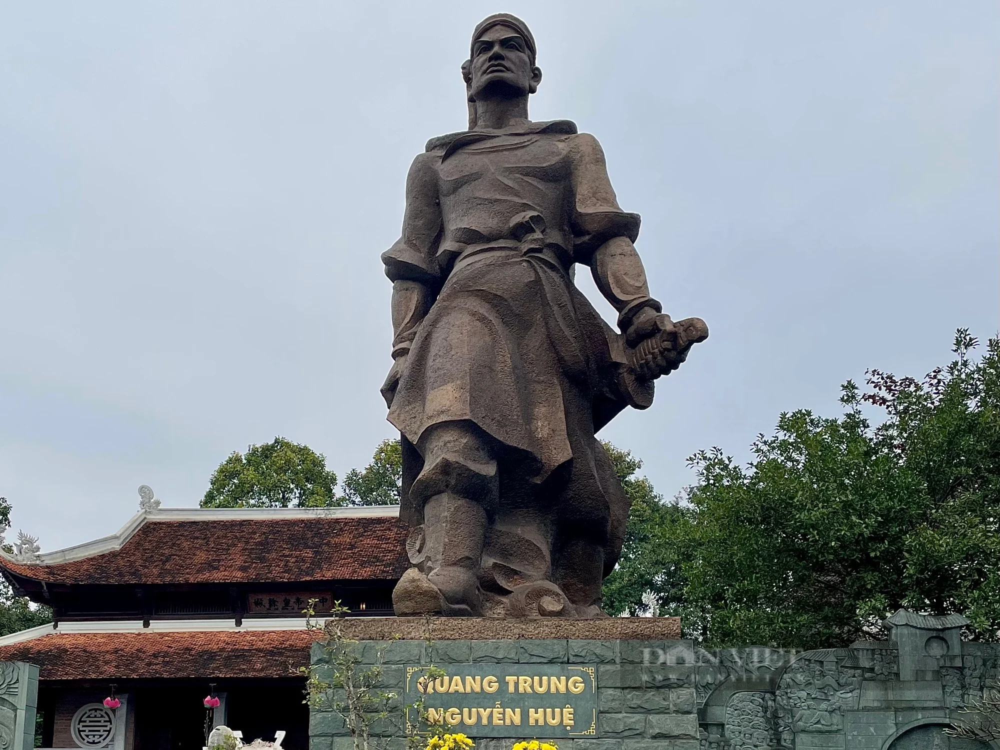
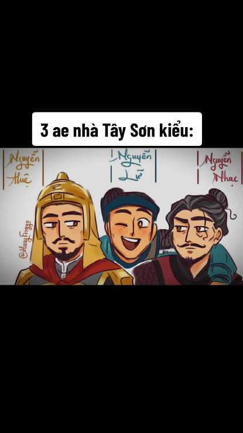
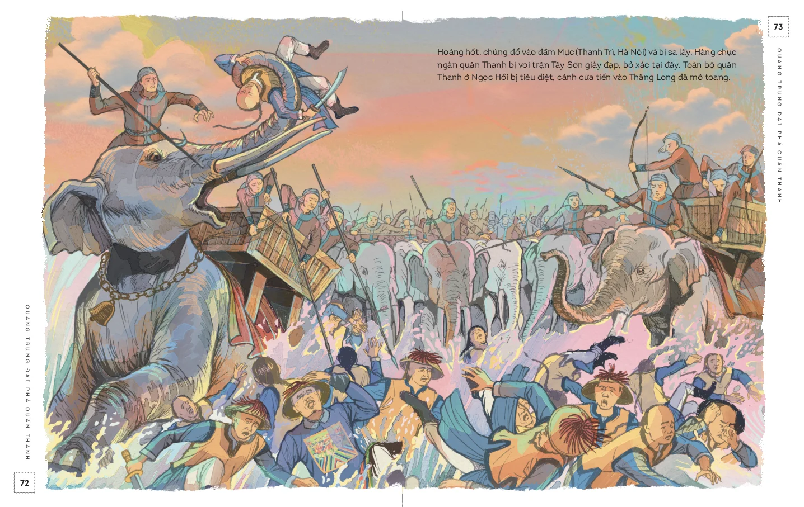

Cuộc khởi nghĩa nông dân vĩ đại thế kỷ XVIII
Mục 3 – Bài 8 – SGK Lịch sử 11 (Kết nối tri thức)

Dùng phím ← → hoặc Space để chuyển slide
Năm 1771
Ba anh em Nguyễn Nhạc, Nguyễn Huệ và Nguyễn Lữ dựng cờ khởi nghĩa tại Tây Sơn thượng đạo, thuộc khu vực An Khê ngày nay.

Năm 1771, nghĩa quân dựng cờ tại Tây Sơn thượng đạo. Đến năm 1774, làm chủ vùng đất từ Quảng Nam đến Bình Thuận.

Tranh dân gian: Quang Trung đại phá quân Thanh
Đất nước chia cắt bởi sông Gianh (hơn 200 năm)
Phong trào Tây Sơn đã góp phần quan trọng xóa bỏ tình trạng chia cắt Đàng Trong – Đàng Ngoài, tạo tiền đề cho sự thống nhất đất nước.
"Phong trào Tây Sơn là một trong những phong trào nông dân vĩ đại nhất trong lịch sử dân tộc, đã góp phần quan trọng xóa bỏ tình trạng chia cắt, tạo tiền đề cho sự thống nhất đất nước và bảo vệ nền độc lập dân tộc."
Cảm ơn thầy cô và các bạn đã lắng nghe!